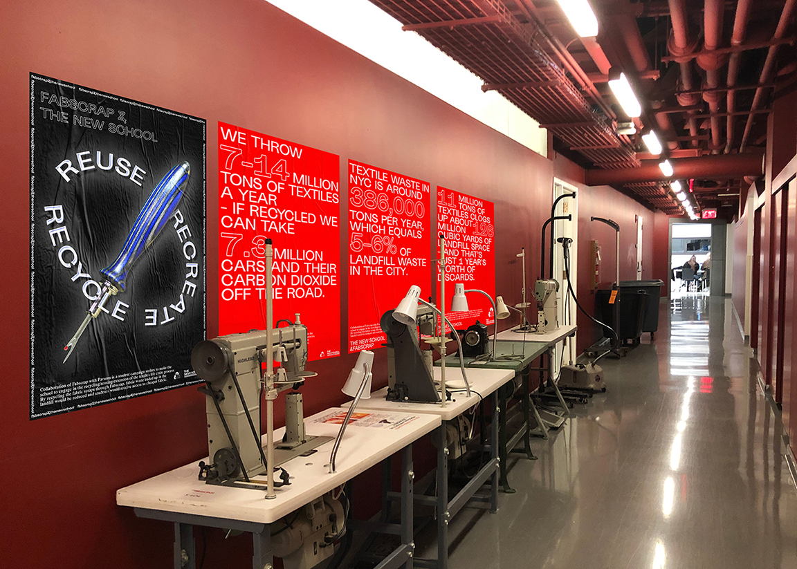

FABSCRAP & PARSONS COLLABORATION
On consumerism, shopping habits, materiality and mass production.
2018 Poster, motion graphic

While Parsons’ Fashion Department always strives to incorporate sustainability as part of the curriculum, the studio environment hardly reflects the values of sustainable design. Massive amount of textile waste remains unrecycled. With students' market research data, this campaign raises a proposal for the opportunity of a more efficient textile recycling system.
Rendering
Parsons will collaborate with the New York City based organization Fabscrap to process the textile waste and receive discounted fabric.


Main posters

Animated main poster
While main posters serves for explanatory purpose, this serie of red secondary posters reveals the status quo of textile waste in the US.

Secondary posters